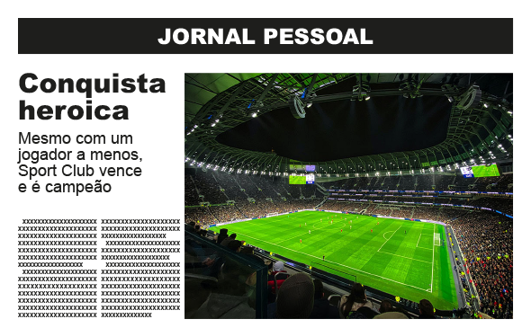
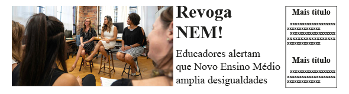
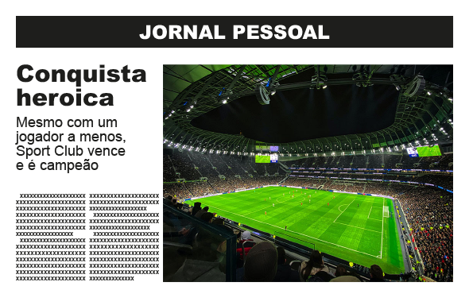
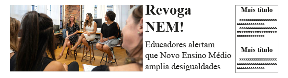

Uma conhecida fábula africana diz que havia um menino muito bom chamado Jabulani. Era tão bom que não sabia dizer não para alguém que lhe pedisse ajuda.
Certo dia, o menino encontrou um leão em uma jaula. Estava preso há alguns dias, com fome e cansado. Depois de o leão insistir e prometer que não faria nada de mal a ele, Jabulani o soltou. Mas o animal se aprontou para comê-lo.
O menino convenceu o leão a perguntar aos outros animais o que seria certo fazer. Todos os animais encontrados no caminho disseram que era certo o leão comer o menino. Menos o chacal, que disse que era preciso entender melhor a situação antes de decidir.
Voltaram para perto da armadilha e, quando chegaram lá, o chacal convenceu o leão a entrar na jaula novamente. Assim que entrou, o menino trancou o leão mais uma vez.
Teria algum vilão nessa história? Seria o leão que não quis cumprir sua promessa? Ou o chacal que enganou? Como os jornais contariam essa história?

COMUNICA?
A gente tem a tendência a considerar as coisas que nos cercam como naturais. Mas não são!
Se você comparar a primeira página dos jornais de um mesmo dia, ou a tela inicial de portais jornalísticos, vai perceber que, apesar de divulgarem praticamente as mesmas notícias, elas são apresentadas de forma diferente, com graus de importância diferentes.
Essas diferenças nascem de escolhas feitas pelos editores.
Ao longo da história a Ética foi definida de muitas formas. De maneira simplificada podemos dizer que ela é uma reflexão sobre as ações de um indivíduo em sua relação com outros indivíduos. E a pergunta que as pessoas acabam se fazendo é: estou agindo certo ou errado?
Agir certo ou errado não é, necessariamente, seguir regras. É que as regras podem mudar, o que foi combinado pode ser descombinado e, então, o que parecia certo vira errado e vice-versa.
Por isso, ao refletir sobre a própria ação particular, sobre as escolhas que faz, a pessoa precisa ter claro que essas escolhas vão interferir na vida das outras pessoas, de forma mais ou menos positiva ou negativa. E é necessário ter consciência disso ao agir.
De forma geral, em cada empresa de comunicação, há sempre dois editores trabalhando em conjunto: o editor chefe, que seleciona o que deve ser comunicado e qual a importância que deve ser dada a cada notícia, e o editor de arte, que busca a forma mais eficiente de comunicar.
Veja esses exemplos estilizados de primeira página de jornal e de tela inicial de um portal de notícias.

ZONAS PRIMÁRIAS E ZONAS MORTAS
No mundo ocidental, por conta da nossa forma de escrever, fomos acostumados a olhar para um material informativo visual de forma que os olhos percorrem um certo caminho instintivo.
Segundo Antonio Celso Collaro, no livro Produção gráfica: arte e técnica na direção de arte, ao observar um jornal ou tela inicial de um site começamos a olhar pelo canto superior esquerdo e seguimos em diagonal até o canto inferior direito. Esses dois pontos são chamados de zonas ópticas primárias: nesses pontos, os elementos posicionados acabam sendo percebidos mais facilmente.
Além dessas duas zonas primárias, Collaro cita duas zonas chamadas de mortas, isto é, que por si só não costumam atrair tanto a atenção: o canto superior direito e, como menos perceptível ainda, o canto inferior direito. Elementos posicionados nesses locais podem passar despercebidos, caso o editor de arte não introduza elementos que chamem a nossa atenção.
Com o uso cada vez mais constante das telas de computador e dos celulares para acessar todo tipo de informação, pesquisadores como Jakob Nielsen e Don Norman perceberam uma alteração na forma das pessoas lerem quando estão usando esses dispositivos.
Segundo os pesquisadores da empresa de consultoria em experiência do usuário, que eles fundaram, existem alguns padrões de leitura: o mais citado é o padrão em F.
O usuário começa lendo a parte superior da área de conteúdo de um site com um movimento horizontal da esquerda para a direita. Em seguida, o olhar desce um pouco e o usuário faz um segundo movimento horizontal cobrindo uma área menor. Por fim, o olhar desce pelo restante da página, buscando pontos de interesse.
Dessa forma, as primeiras linhas bem como as primeiras palavras de cada linha recebem mais atenção que as outras.
ALTERANDO A PERCEPÇÃO
Embora existam essas zonas, que atraem o olhar de forma mais ou menos intensa, existem outros fatores que podem influenciar a nossa percepção e chamar mais a nossa atenção. Há fatores objetivos e pelo menos um fator subjetivo.
Conceitos da teoria psicológica da Gestalt, que se debruçou sobre a forma como as pessoas percebem a realidade ao seu redor, são usadas pelos editores de arte dos veículos informativos para que a comunicação aconteça de forma eficiente.
A Gestalt descobriu que as pessoas percebem um objeto como algo inteiro, um todo, e não como uma mera soma de partes ou pedaços. Além disso, esse objeto não é percebido desconectado do contexto em que está inserido: o contexto também faz parte da percepção.
Nossa percepção trabalha buscando padrões, ela agrupa elementos que estão próximos ou que são semelhantes. Equilíbrio, simetria, estabilidade, simplicidade e regularidade são características buscadas nos objetos percebidos, segundo a Gestalt.
Entre os fatores objetivos, o uso das cores e das formas, inclusive as formas presentes nas fotografias, ilustrações e infográficos, são usados para chamar a atenção do leitor e conferir mais importância a determinados conteúdos do que a outros.
Além desses, o espaço é um fator muito relevante. Esse é um fator que pode ser extrapolado para uma situação não visual ou, pelo menos, não impressa, como um noticiário de TV ou rádio. Quanto maior o espaço visual (ou tempo) destinado a uma notícia, mais importante ela aparenta ser para o leitor ou ouvinte.
O fator subjetivo, mas não menos determinante, diz respeito aos interesses e expectativas que a gente tem. Os assuntos pelos quais me interesso, os assuntos que eu busco encontrar em um jornal ou site, vão chamar minha atenção, mesmo que estejam em uma posição visual menos privilegiada.
EDITOR
Editores lidam com escolhas: selecionam, adequam e propõem para a leitura notícias, textos, livros entre outras coisas. A posição de uma matéria na página ou no site, o espaço que ela ocupa, as palavras utilizadas propõem ao leitor uma forma de enxergar e entender os fatos. Como qualquer outra leitura de mundo, não é neutra, não é totalmente objetiva. É uma visão parcial que se constrói a partir da posição em que a pessoa está, das expectativas e interesses que ela tem.
Outra palavra marcada por muitas definições é Ideologia. Infelizmente essa palavra ganhou um peso negativo muito grande. Por ideologia podemos entender uma visão de mundo, um conjunto de ideias e valores compartilhados por um grupo de pessoas.
Como as pessoas percebem o mundo a partir de pontos de referência diferentes, não há uma única visão de mundo. E é aí que mora o perigo: acreditar que o próprio ponto de referência é o único, ou o único correto. Quem acredita que a própria visão de mundo é a única correta, chama de ideológica a visão de mundo do outro, com a qual não concorda.
Como há muitas visões de mundo, ou ideologias, não é possível falar em neutralidade, porque as nossas escolhas vão sempre estar fundamentadas na nossa visão de mundo, que não é a única.
Não se deve, contudo, cair em um relativismo fácil, justificando qualquer visão de mundo só porque é a visão de outro grupo. É possível, sim, fazer uma crítica a uma determinada visão de mundo, desde que se tenha a humildade intelectual de buscar entender seus fundamentos e a forma como foi construída, e não criticar essa visão a partir de frases feitas e clichês.
Os editores representam o pensamento e os interesses das empresas de comunicação. E não vai aqui nenhum juízo antecipado de valor. Todas as pessoas possuem uma visão de mundo, construída na relação com outras pessoas. É uma visão compartilhada, mas nunca 100% compartilhada, com um certo grupo de pessoas. Além disso, todas as pessoas possuem interesses que movem suas ações e, como a visão de mundo, esses interesses são também compartilhados com outros.
A notícia é um texto produzido por um veículo de comunicação, como um jornal, programa de TV, site ou blog, e que relata fatos de interesse público em linguagem clara, fidedigna e aparentemente neutra.
De modo geral, uma notícia responde àquelas costumeiras perguntas: o quê? quem? quando? onde? como? por quê? Ao responder a essas perguntas, redige na terceira pessoa, faz uso de palavras que indicam precisão, como números, evita o uso de adjetivos e se exime de dar opiniões, fornecendo dados para que o leitor avalie por si.
A estrutura básica de uma notícia é composta por alguns blocos:
- título ou manchete, cuja função é mais chamar a atenção para a notícia do que propriamente informar;
- lead (lide) ou chamada, que traz a informação mais importante, funcionando como uma síntese e, ao mesmo tempo, chamariz para a leitura;
- corpo da notícia.
Além desses blocos, também podem aparecer os box ou retrancas, que são matérias auxiliares, fotos e suas legendas, infográficos, e destaques ou olhos, que são citações do próprio texto em tamanho maior, entre outros.
Agora você é convidado a se colocar no lugar de um editor. Escolha um template:
-
Coloque em ordem de prioridade, seus interesses:chevron_right
123
Educação
123Entretenimento
123Esporte
- Agora defina o enfoque que você quer dar para cada notícia:chevron_right
"I" indiferente "N" negativa "P" positiva
INPEducação
INPEntretenimento
INPEsporte
 



- Agora defina o enfoque que você quer dar para cada notícia:chevron_right
Depois de experimentar ser um editor, vamos refletir sobre alguns pontos importantes.
UM POUCO
Conforme vamos acompanhando ao longo do tempo uma determinada publicação, é possível perceber qual a visão de mundo que essa publicação compartilha, quais são os interesses que ela defende.
Como há outras visões de mundo e interesses, é necessário comparar com o que outras publicações dizem.
Além disso, é preciso também começar a refletir sobre as consequências provocadas por uma determinada visão de mundo e pela defesa de determinados interesses. Quem ganha e quem perde com isso a curto, médio e longo prazo?
Por exemplo, vivemos hoje as consequências de uma exploração desmedida dos chamados recursos naturais, com desmatamento, poluição, aquecimento global, mudanças climáticas.
Não é uma tarefa fácil se manter informado. Não é fácil se manter bem informado.
COELHO, Alfredo S.V. Coelho. Em leão com fome dá pra confiar? Histórias e roteiros de Filosofia para crianças. Itupeva: Clube de Autores, 2017. (https://clubedeautores.com.br/livro/em-leao-com-fome-da-pra-confiar)
COELHO, Alfredo S. V. Escolhas, poder e cultura: análise visual de mídia impressa. São Paulo: UNICID, 2013 (notas de aula). Disponível em https://prezi.com/p/t376bevf59gj/escolhas-poder-e-cultura-completo/. Acesso em 07 jun. 2023.
COELHO, Alfredo S. V. Escolhas, poder e cultura. São Paulo: UNICID, 2013 (notas de aula). Disponível em https://mirambae2016.wordpress.com/2013/03/08/escolhas-poder-e-cultura/. Acesso em 07 jun. 2023.
COLLARO, Antonio Celso. Produção gráfica: arte e técnica na direção de arte. 2 ed. São Paulo: Pearson Prentice Hall, 2012. Disponível em: https://plataforma.bvirtual.com.br/Leitor/Publicacao/3102/pdf/0. Acesso em 15 jun. 2023.
PERNICE, Kara. F-Shaped Pattern of reading on the web: misunderstood, but still relevant (even on mobile). Misunderstood, but still relevant (even on mobile). 2017. Disponível em: https://www.nngroup.com/articles/f-shaped-pattern-reading-web-content/. Acesso em: 27 jul. 2023.
Governo do Estado de São Paulo
Secretaria de Desenvolvimento Econômico
UNIVERSIDADE VIRTUAL DO ESTADO DE SÃO PAULO – UNIVESP
PresidenteMarcos Augusto Borges
Diretora AcadêmicaSimone Telles Martins Ramos
Equipe
Docente responsávelEli Vagner Francisco Rodrigues
CoordenaçãoWesley de Souza Lima
Roteirização e Design InstrucionalAlfredo Salvador Vieira Coelho e Denise de Oliveira Teixeira
IlustraçãoCarlos Henrique Bossolan
LayoutAlexandre Tavares Alves dos Santos
ProgramaçãoCelso de Oliveira
Agosto/2023